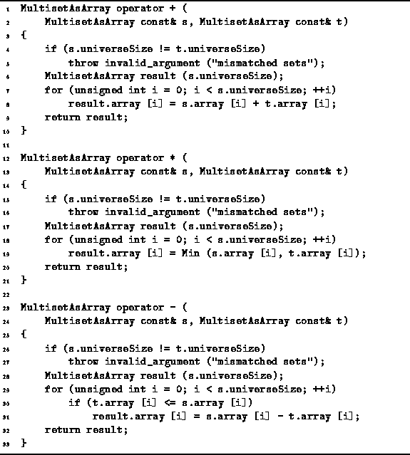

Data Structures and Algorithms
with Object-Oriented Design Patterns in C++
Data Structures and Algorithms
with Object-Oriented Design Patterns in C++
Because multisets permit duplicates but sets do not,
the definitions of union, intersection and difference
are slightly modified for multisets.
The union of multisets S and T,
written  ,
is the multiset comprised of all the elements of S
together with all the element of T.
Since a multiset may contain duplicates,
it does not matter if the same element appears in S and T.
,
is the multiset comprised of all the elements of S
together with all the element of T.
Since a multiset may contain duplicates,
it does not matter if the same element appears in S and T.
The subtle difference between union of sets and union of multisets gives rise to an interesting and useful property. If S and T are regular sets,

On the other hand, if S and T are multisets,

The intersection of sets S and T
is written  .
The elements of
.
The elements of  are those items
which are elements of both S and T.
If a given element appears more than once in S or T (or both),
the intersection contains m copies of that element,
where m is the smaller of the number of times the element appears
in S or T.
E.g., if
are those items
which are elements of both S and T.
If a given element appears more than once in S or T (or both),
the intersection contains m copies of that element,
where m is the smaller of the number of times the element appears
in S or T.
E.g., if  and
and  ,
the intersection is
,
the intersection is  .
.
The difference of sets S and T, written S-T, contains those elements of S which are not also elements of T. I.e., the result S-T is obtained by taking the set S and removing from it those elements which are also found in T.
Program  gives the
implementations of the union, intersection, and difference operators
(+, *, and -, respectively)
for operands of type MultisetAsArray.
This code is quite similar to that of
the SetAsArray class (Program )
and the SetAsBitVector class (Program ).
The worst-case running time of each of these operations is O(N).
gives the
implementations of the union, intersection, and difference operators
(+, *, and -, respectively)
for operands of type MultisetAsArray.
This code is quite similar to that of
the SetAsArray class (Program )
and the SetAsBitVector class (Program ).
The worst-case running time of each of these operations is O(N).

Program: MultisetAsArray Class Union, Intersection and Difference Operator Definitions
Instead of using the Boolean operators &&, || and !, we have used + (integer addition), Min and - (integer subtraction). The following table summarizes the operators used in the various set and multiset implementations.
| class | |||
|
operation | SetAsArray | SetAsBitVector | MultisetAsArray |
| union | || | | | + |
| intersection | && | & | Min |
| difference | && and ! | & and | <= and - |
 Copyright © 1997 by Bruno R. Preiss, P.Eng. All rights reserved.
Copyright © 1997 by Bruno R. Preiss, P.Eng. All rights reserved.